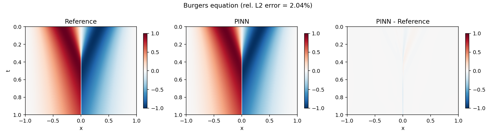
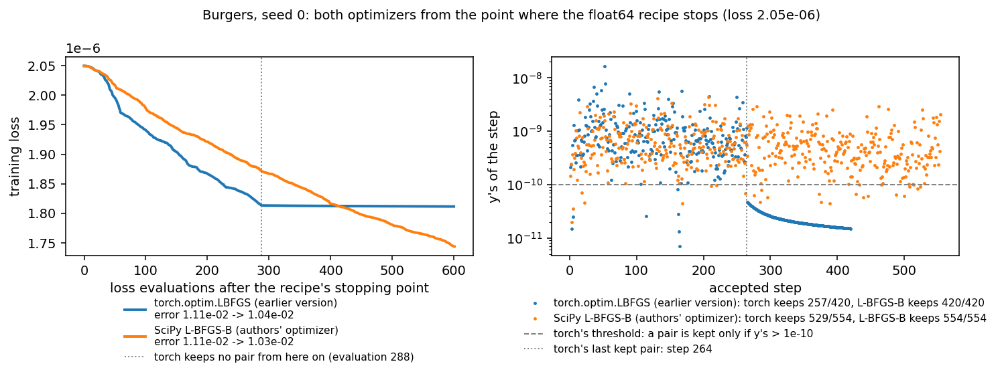

Neural networks trained to satisfy the heat and Burgers equations directly, checked against exact solutions, and a 40-run reproduction of the original paper's benchmark that finds where its headline number comes from.
A PINN is a network \(u_\theta(x, t)\) trained so that the PDE residual, computed by automatic differentiation, vanishes at collocation points, together with the initial and boundary conditions: no mesh and no solved data (Raissi, Perdikaris & Karniadakis, 2019).
Training is fragile: the terms of the loss pull with very different gradients (Wang, Teng & Perdikaris, 2021), and sharp features are hard for first-order optimisers.
The viscous Burgers equation, with its thin internal layer at \(x = 0\), is the standard stress test, with an exact solution by the Cole–Hopf transform (Basdevant et al., 1986).
Burgers equation \(u_t + u u_x = \nu u_{xx}\), \(\nu = 0.01/\pi\): scored against the exact Cole–Hopf solution, with a Chebyshev solver as a cross-check.
Training: Adam, then L-BFGS on a fixed batch of points; 5 seeds per equation.
Reproduction: the paper's own recipe (SciPy L-BFGS-B, their architecture and data), 20 seeds in float32 and 20 in float64.
Model selection without the answer: a residual on a fresh grid, computed without the exact solution, to choose weights and rank runs.

Fig 1 · Burgers: exact solution, PINN and error, concentrated at the internal layer.
Results
Key results
0.14 ± 0.05 %
heat · relative L² error against the closed form, 5 seeds (global; per time slice above 10 % from t ≈ 0.6)
1.66 ± 0.49 %
Burgers · against the exact solution, 5 seeds · Adam alone stalls near 8.8 %
0 / 20
float32 runs of the paper's recipe reaching its 6.7 × 10⁻⁴ · 4 / 20 in float64
Why Burgers needs two optimisers
Loading training loss…
Training loss: Adam plateaus; L-BFGS on a fixed batch of points lowers it by more than an order of magnitude.
A silent failure: L-BFGS with a line search stops updating, without an error, if the collocation points are resampled at each call; with a fixed batch the error falls from 8.8 % to 1.8 %.
The global number hides time: the heat solution decays by \(e^{-\pi^2}\); the absolute error stays below \(1.9 \times 10^{-3}\), so the relative error per slice passes 10 % at \(t \approx 0.59\).
Reproducing the paper

Fig 2 · Two L-BFGS implementations from the same point: torch's absolute curvature test freezes its memory near a loss of \(10^{-6}\); SciPy's L-BFGS-B keeps every pair.
Precision decides it: in float32, the precision of the authors' code, 19 of 20 runs stop when the loss decrease falls below float32 resolution; median error \(2.0 \times 10^{-3}\). In float64, \(1.15 \times 10^{-3}\), and 4 of 20 runs reach the published value.
A residual on a fresh grid ranks the runs (Spearman 0.58 / 0.54); the final training loss does not (0.04 / 0.11). Keeping the best of 5 seeds by that residual cuts float64 runs above \(10^{-3}\) from 50 % to 13 %.
The same residual chooses the boundary weight without the exact solution: 0.86 % error, half that of the untuned weight.
Loading Burgers field…
Burgers, space–time field: switch between the exact solution, the PINN and their difference.
Limits
What the results do not show
The authors ran TensorFlow 1; the reproduction uses their recipe in PyTorch with SciPy's optimiser, so it tests the recipe, not their exact runs.
Two one-dimensional equations: the conclusions about optimisers and model selection are not tested on harder PDEs.